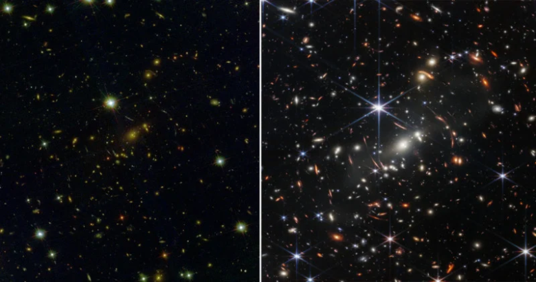
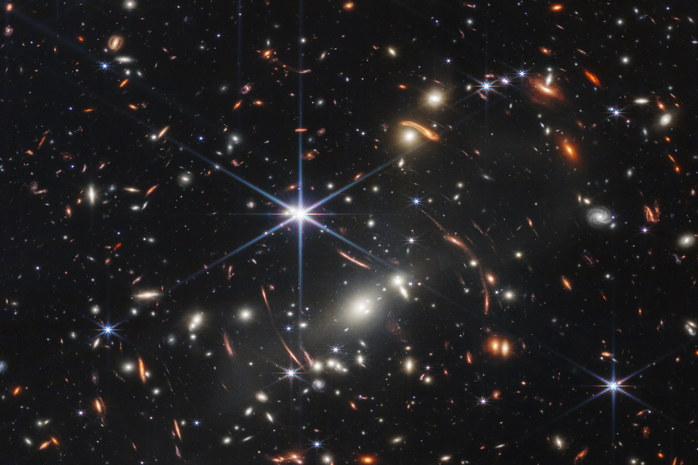
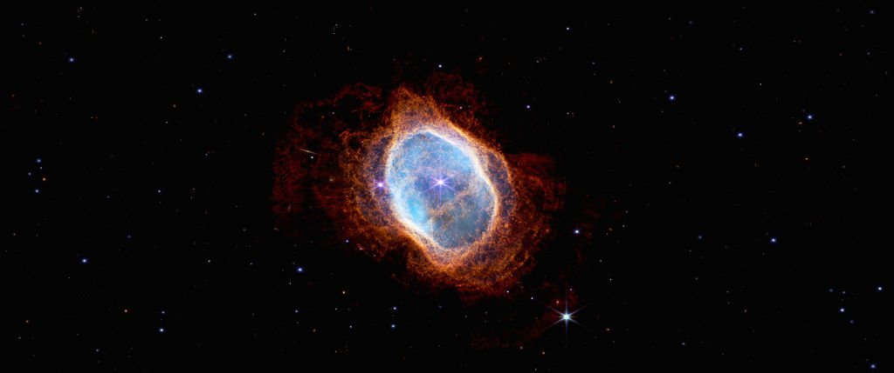

제임스 웹 우주 망원경이 찍은 사진들

[좌: 허블 망원경 우: 제임스웹 우주 망원경]

[제임스웹이 처음 찍은 은하단 SMACS 0723]

[제임스웹이 찍은 용골 성운의 NGC 3324]

[제임스 웹 망원경이 찍은 본 남부 고리 성운]
[좌: 허블 망원경 우: 제임스웹 우주 망원경]
[제임스웹이 처음 찍은 은하단 SMACS 0723]
[제임스웹이 찍은 용골 성운의 NGC 3324]
[제임스 웹 망원경이 찍은 본 남부 고리 성운]